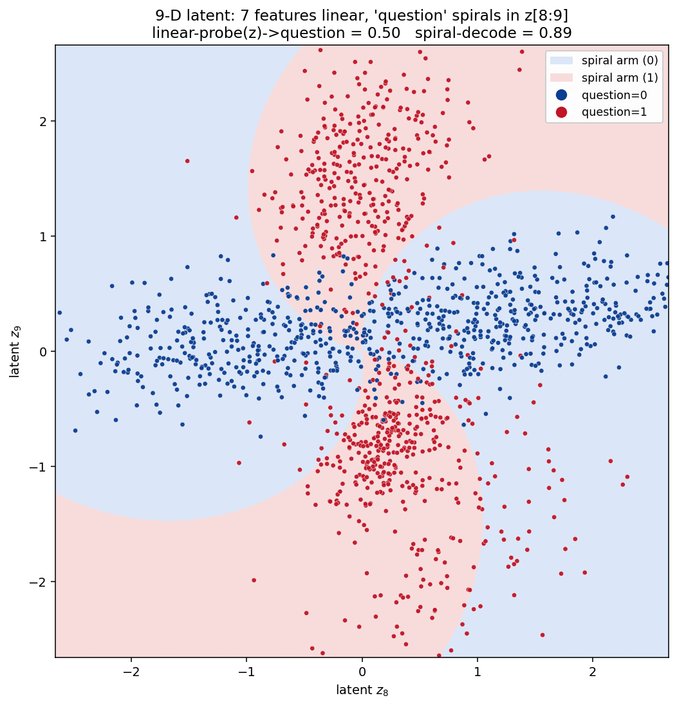
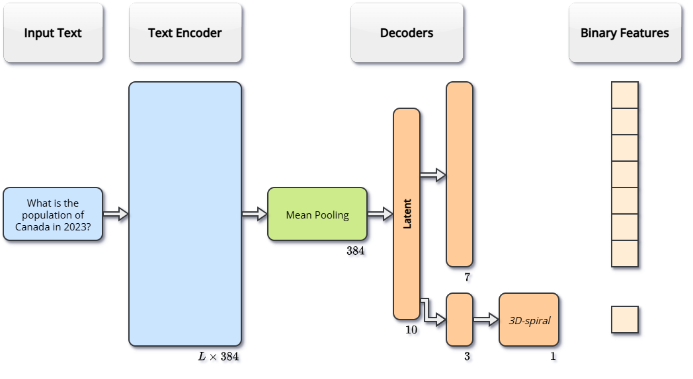

BlueDot Impact ran their first Technical AI Safety Puzzle, and I gave it a go. Here is a short write-up of what the puzzle asked, how I went about it, and what I walked away with.
The puzzle
We are handed a pretrained model (model.pt) that reads a piece of text and predicts 8 binary features at once (whether it contains a person's name, mentions a food, is phrased as a question, and so on). If you look at the activations in one particular layer, 7 of those features sit there linearly, but country does not. It has a gated representation: it is encoded linearly when food is on, and linearly again when food is off, just in the opposite direction.
The task was to spot this behavior and then retrain the model so it develops other kinds of odd representations. Link: Technical AI Safety Puzzle #1.
My approach
I defined an interesting representation as one that:
- is rich in a useful sense: at the very least, a decoder should be able to recover the eight binary features from it, and ideally it also holds extra information about the data that further probes could dig out;
- shows up naturally, as the optimal solution to some problem;
- lands in a sweet spot between weird and interpretable: hard to read off with a simple probe, but still describable as a clean geometric structure.
What I really wanted was something that hit all three at once, not just one of them.
My first instinct was to get there naturally, by training the same architecture on the dataset they gave us. That just never worked. Every run came back with a linear representation for every feature, and it turns out the features are already linearly separable right after mean pooling anyway. The dataset is also perfectly balanced, with every combination of features equally likely, so plain binary cross-entropy has no reason to do anything other than the trivial linear thing.
So I switched to pushing the model harder. A dimensional bottleneck in the latent space, and a linearity penalty coming from an adversarial probe, both gave me non-trivial representations, but fuzzy ones that were nowhere near as crisp as the XOR structure hiding in model.pt. I kept going. I added an auxiliary decoder with a reconstruction loss so the model would actually use the information the classifier throws away, and I experimented with Boolean representations, mixing a tanh activation with a penalty and swapping the MLP for my own Boolean decoder to tease out a readable Boolean formula. Once I combined all of that, I got a model where several features are gated by other features, which is really just a broader version of what model.pt was already doing. And since the dataset is perfectly balanced, the only Boolean functions that can fit are surjections from \(\{0,1\}^K\) onto \(\{0,1\}^8\) (so \(K \ge 8\)), and of those, only XORs were simple enough to actually be learned.
At that point I decided to just force a non-linear representation in the latent space, because this dataset and task make one really hard to get any other way. I used an adversarial loss for that, and then steered the model toward a spiral shape: one feature gets decoded by a little 3D-spiral module with 19 parameters (frequencies, phases and amplitudes), fed by the bottom three latent dimensions after an extra \(3 \to 3\) hidden layer.

To stop the whole thing from collapsing, I threw in two more losses. If I write the latent as \(z\), then \(z_{0:7}\) decode the seven features (number, color, food, sentiment, country, person, body_part) the usual way, and \(z_7, z_8, z_9\) are the ones carrying the spiral:
- spread_loss: a VICReg-style term (Bardes, Ponce & LeCun, 2021) applied to \((z_7, z_8, z_9)\) within each batch, so those dimensions stay alive and do not collapse into each other;
- radius_mismatch: penalizes how much the radius of \((z_7, z_8)\) shifts between the question and not-question classes.

Takeaways
If there is one thing this drove home, it is that what a model represents is really just a consequence of the pressure you put on it. On a clean, perfectly balanced dataset, cross-entropy has no reason to reach for anything past the simplest linear code, and every "natural" attempt I made slid right back to that. I only got a genuinely non-linear, gated, or spiral representation once I started adding structure by hand: bottlenecks, adversarial probes, geometric decoders, and a couple of regularizers to keep the spare dimensions from degenerating.
The trickiest part was the tension sitting inside the goal itself. I wanted something weird, in the sense of being hard to read off with a simple probe, but also interpretable, in the sense of being describable as a clean geometric object. Those two tug against each other, and honestly most of my time went into finding losses that buy a bit of weirdness without just turning the latent into noise.
I will come back and flesh this out with more information soon.